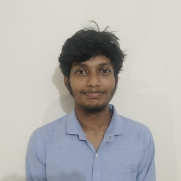

Khulna University · Electronics & Communication Engineering
Final-year ECE student researching machine learning for healthcare signals and diagnostics — building interpretable, optimization-driven classifiers.

I am a final-year Electronics & Communication Engineering Discipline student at Khulna University, Bangladesh. My interests lie in Machine Learning and Artificial Intelligence, with a focus on healthcare applications. I am currently developing my skills in Vision Transformers, Large Language Models, and Explainable AI.
prosenjitdas0929@gmail.com · Khulna University, Khulna-9208, Bangladesh
Journal articles
Gallstone disease classification using SLOA-optimized CatBoost classifier with explainable AI
PLoS One
View paperDengue fever classification integrating bird swarm algorithm with gradient boosting classifier along with feature selection and SHAP–DiCE based interpretability
Applied Sciences, Vol. 15, p. 11413, MDPI
View paperAquaculture water quality classification using XGBoost classifier model optimized by the Honey Badger Algorithm with SHAP and DiCE-based explanations
Water, Vol. 17, p. 2993, MDPI
View paperBreast cancer prediction using Rotation Forest algorithm along with finding the influential causes
Bioengineering, Vol. 12, p. 1020, MDPI
View paperConferences
An explainable hybrid CNN–Vision Transformer framework for lung cancer classification on LungHist700
QPAIN · IEEE
View paperPreprints
A comprehensive survey of prompt engineering techniques in large language models
TechRxiv
View paperDatasets
KU-Bangla: a comprehensive Bangla dataset for language modeling and translation
Mendeley Data, v1
View datasetKU-BD-Fish: high-resolution white-background and segmented images for species classification
Mendeley Data, v3
View datasetIn progress
Feature selection and hyperparameter optimization of XGBoost classifier using MGO algorithm for gallstone disease classification with SHAP-based explanations
Journal paper
Waiting for submissionOptimized machine learning framework for lifestyle and dietary-based type 2 diabetes risk prediction
ICCAD — Intl. Conf. on Control, Automation and Diagnosis
AcceptedAn optimization-driven and interpretable ensemble learning framework for stethoscope-based lung sound classification
SPICSCON — Intl. Conf. on Signal Processing, Information, Communication and Systems
SubmittedAquaculture water quality classification using SLO-optimized XGBoost with explainable AI
SPICSCON — Intl. Conf. on Signal Processing, Information, Communication and Systems
SubmittedOrganized by IEEE KU Branch
Awarded for achieving a CGPA of 3.88 / 4.00 (top 3 in the discipline)